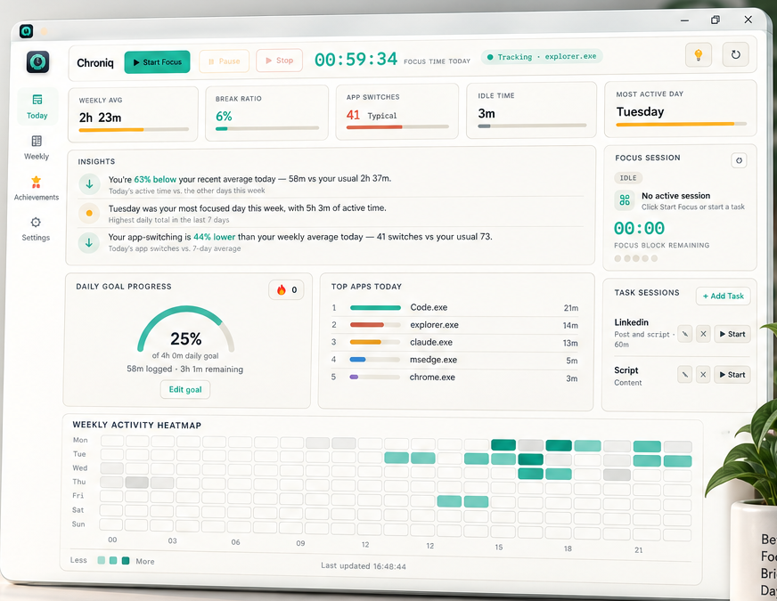
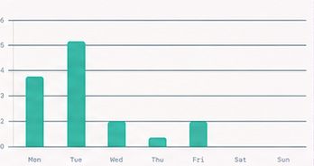
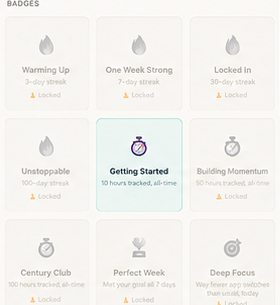

01 — TODAY
What's happening now.
Live focus time, the day's KPIs, insights and your goal — one glanceable view.

Chroniq quietly tracks how you work, turns activity into useful insight, and keeps the data on your computer.

Plenty of tools can log what your computer did. Chroniq is built for the harder question — what that says about how you actually work, and what to change.
Chroniq observes active applications, idle time and work patterns quietly in the background — no timers to start, no tags to remember.
Raw events turn into patterns, comparisons and plain-language insights — what's above your baseline, what's below it, and which day carried the week.
You're 63% below your recent average today — 58m vs your usual 2h 37m.
Tuesday was your most focused day this week, with 5h 3m of active time.
App-switching is 44% lower than your weekly average — 41 vs 73.
Set a daily goal, start a focused session, and let streaks reward the consistency that actually compounds.
Chroniq is designed to keep your activity where it belongs — on your computer. No server, no account, no sync.
Every view is built to be understood at a glance, then explored when you want the detail.
Live focus time, the day's KPIs, insights and your goal — one glanceable view.
This week against last, and exactly which days you were most focused.

Streaks and badges that reward genuine follow-through — not just showing up.
